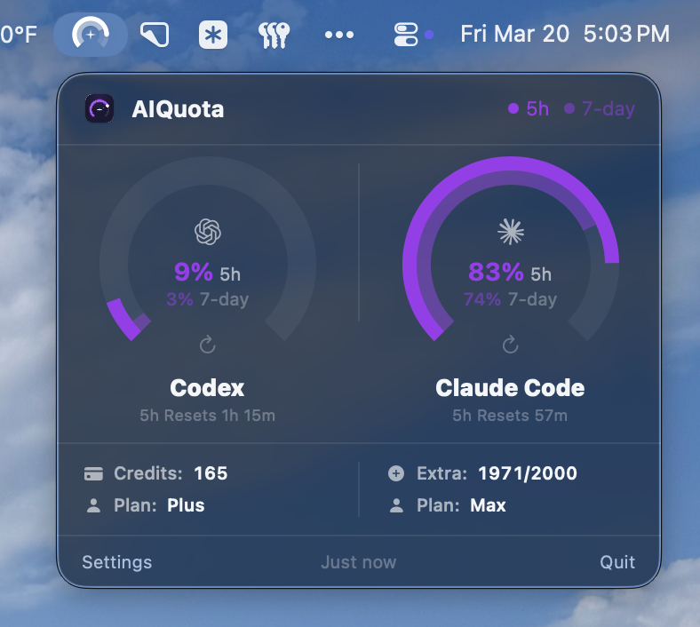

Context
AI-assisted coding became part of my daily workflow quickly, but the feedback loop around usage stayed oddly primitive. Codex and Claude Code both meter access in ways that matter when you are mid-session, yet checking that state usually means leaving your editor, opening a browser, and translating two very different quota models by hand.
AIQuota started as a focused native utility idea: put the answer in the menu bar, make it understandable in a glance, and keep setup lightweight enough that it feels like part of macOS rather than another dashboard.
Challenge
The hard part was not just fetching data. OpenAI and Anthropic expose usage differently, with different windows, terminology, and edge cases. Codex leans on a weekly cap plus approximate message counts, while Claude mixes a 5-hour rate window, a 7-day allowance, and Max-plan overflow credits.
The product had to normalize those differences without flattening away useful nuance. It also had to feel trustworthy: browser-based sign-in, secure token storage, resilient refresh behavior, clear reset timing, and notification thresholds all shape whether a utility like this feels dependable or disposable.
Strategy
- Menu bar first: treated quota as ambient system state, not a destination product surface, with a gauge icon that answers the core question before the popover is even opened.
- Shared visual grammar: used dual-arc gauges, plan badges, credits, and reset labels to make unlike provider models feel coherent while still preserving service-specific details.
- Low-friction authentication: signed in through existing ChatGPT and Claude browser sessions, then stored the resulting state securely in Keychain so users did not have to manage API keys or custom auth flows.
- Trust details over feature sprawl: added widgets, network recovery, threshold-based notifications, and silent auto-update behavior so the product behaved more like a calm utility than a noisy monitoring app.
Outcome
AIQuota shipped quickly as a notarized macOS app with menu bar monitoring, widgets, notifications, and support for both Codex and Claude Code. The current release is available as an open-source GitHub project with downloadable desktop builds, and it continues to evolve through small polish passes that improve clarity rather than expanding scope for its own sake.
More importantly, the project validated a product pattern I care about: as AI tools become everyday infrastructure, a whole layer of adjacent workflow problems appears around them. Some of the best opportunities are not bigger assistants, but thinner native utilities that remove friction around the edges.
Key Learnings
Small utilities still require strong product judgment. The right answer was not maximum detail or a billing dashboard; it was a calm, legible answer to “am I safe to keep going?” Choosing what not to show was as important as the network and auth work underneath it.
AIQuota also reinforced how quickly AI-adjacent products can move when the brief is narrow and the trust details are taken seriously. Much of the iteration happened in the last ten percent: arc hierarchy, reset language, widget sync, and recovery behavior all mattered more than any single flashy feature.
Visuals

